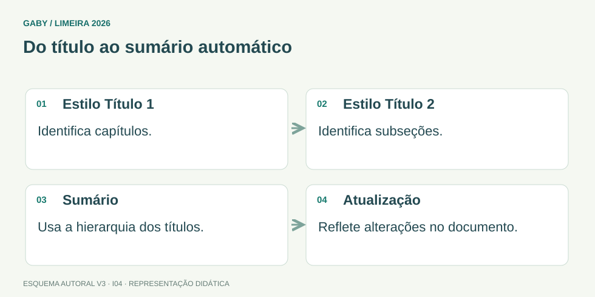

Objetivos do módulo
- Manipular tabelas e quebras de página/seção.
- Entender numeração, legendas e índices.
- Reconhecer objetos, campos e caixas de texto.
- Distinguir quebra de linha, de coluna, de página e de seção, com os atalhos de cada uma.
- Configurar cabeçalho, rodapé e numeração por seção (Primeira Página Diferente e Vincular ao anterior).
- Localizar os comandos da guia Referências: sumário, notas, citação, legenda e índice remissivo.
- Usar os atalhos de campos, converter texto em tabela e ajustar a largura das colunas.
- Definir margens, marca-d'água, modelos, abertura de PDF e opções de impressão.
Do título ao sumário automático

Descrição em texto do esquema
- Estilo Título 1: Identifica capítulos.
- Estilo Título 2: Identifica subseções.
- Sumário: Usa a hierarquia dos títulos.
- Atualização: Reflete alterações no documento.
Oficina visual · aplique o esquema
Você mudou o nome de um capítulo e o sumário continua igual. Que procedimento deve verificar?
Atividade autoral complementar da V3. Registre sua resposta; a resolução está no arquivo de gabarito e revisão.
Mapa do conteúdo
1. Tabelas
Referência desta aula: Word do Microsoft 365 para Windows (aplicativo de desktop), em português do Brasil. Os atalhos são os padrões do Word para Windows.
Tabelas são compostas por linhas, colunas e células. É possível inserir/excluir linhas e colunas, mesclar/dividir células, ajustar largura, alinhar conteúdo e aplicar estilos. Tabela não é planilha completa: embora possa fazer cálculos simples, o Excel é mais adequado para análise numérica.
Inserir uma tabela
O caminho é Inserir > Tabela. Há duas formas principais:
- Grade: passe o ponteiro sobre os quadradinhos até destacar a quantidade de colunas e linhas desejada.
- Inserir Tabela: abre uma caixa em que você informa a quantidade de colunas e a quantidade de linhas. São esses dois números que definem a estrutura inicial da tabela.
Com o cursor dentro da tabela, o Word mostra duas guias próprias: Design da Tabela (estilos, sombreamento e bordas) e Layout da Tabela (linhas, colunas, células e tamanho). Não confunda esta última com a guia Layout da página, que trata de margens, orientação e quebras.
Mesclar e dividir células
| Comando (guia Layout da Tabela) | O que faz | Como usar |
|---|---|---|
| Mesclar Células | Une duas ou mais células vizinhas em uma só. | Selecione células adjacentes da mesma linha ou coluna e acione o comando (também aparece no botão direito do mouse). |
| Dividir Células | Transforma uma célula em várias. | Selecione a célula, acione o comando e informe na caixa o número de colunas e de linhas em que ela será dividida. |
Exemplo: para que a célula do título ocupe toda a largura de uma tabela de quatro colunas, selecione as quatro células da primeira linha e use Mesclar Células. Para colocar três campos lado a lado dentro de uma única célula, use Dividir Células com 3 colunas e 1 linha.
Largura das colunas: ajuste automático
O Word tem três comportamentos para a largura das colunas. Eles aparecem na caixa Converter Texto em Tabela, em Comportamento de ajuste automático, e também no botão AutoAjuste da guia Layout da Tabela (grupo Tamanho da Célula).
| Opção | Como a largura é definida |
|---|---|
| Largura de coluna fixa | Todas as colunas ficam com a medida indicada pelo usuário; a largura não muda sozinha quando o texto cresce. |
| Ajuste automático ao conteúdo | Cada coluna fica com a largura necessária para o texto que contém: coluna com texto curto fica estreita, coluna com texto longo fica larga. |
| Ajuste automático à janela | A tabela ocupa a largura disponível e é redimensionada quando esse espaço muda (por exemplo, ao alterar as margens). |
Converter texto em tabela e tabela em texto
Quando os dados já estão digitados, não é preciso redigitar. O Word monta a tabela a partir de dois sinais presentes no texto:
- um caractere separador (tabulação, vírgula ou outro) indica onde termina uma coluna e começa a seguinte;
- cada marca de parágrafo (¶) indica o início de uma nova linha da tabela.
Procedimento: selecione o texto e use Inserir > Tabela > Converter Texto em Tabela. Na caixa, confira o número de colunas e de linhas em Tamanho da tabela, escolha o comportamento de ajuste automático e indique, em Separar texto em, o separador que o texto usa.
Exemplo (→ representa uma tabulação):
Nome→Setor→Ramal¶Lúcia→Protocolo→214¶Davi→Almoxarifado→230¶
Com o separador Tabulações, o resultado é uma tabela de 3 colunas e 3 linhas.
- Vírgulas dentro do conteúdo: se um campo tem vírgula (um endereço como “Rua das Acácias, 45”), não use vírgula como separador, pois cada vírgula criaria uma coluna. Separe os campos com tabulações e escolha Tabulações na caixa.
- Coluna a mais ou a menos: confira os separadores existentes no texto e o separador escolhido. Um separador sobrando em uma linha gera uma coluna extra. Ative Mostrar/Ocultar (¶) na guia Página Inicial para enxergar tabulações e marcas de parágrafo.
O caminho inverso é Converter em Texto, na guia Layout da Tabela (grupo Dados): selecione a tabela e escolha o caractere que ficará no lugar das divisões de coluna. Cada linha da tabela vira um parágrafo e o conteúdo é preservado.
Linhas de grade não são bordas
| Elemento | O que é | Sai na impressão? |
|---|---|---|
| Bordas | Formatação da tabela. Uma tabela nova já vem com bordas pretas. | Sim. |
| Linhas de grade | Guias que mostram os limites das células quando a tabela está sem bordas. Ativam-se em Exibir Linhas de Grade, na guia Layout da Tabela, e valem para todas as tabelas do documento. | Não. |
Ocultar as linhas de grade muda apenas o que se vê na tela. A tabela continua existindo, com as mesmas células e o mesmo conteúdo.
Teclado dentro da tabela
| Tecla | Efeito |
|---|---|
Tab | Vai para a próxima célula da linha. |
Shift+Tab | Volta para a célula anterior. |
Ctrl+Tab | Insere um caractere de tabulação dentro da célula. |
2. Quebra de página x seção
Quebra de página força conteúdo seguinte para nova página. Quebra de seção cria uma nova seção que pode ter margens, orientação, cabeçalho/rodapé e numeração diferentes.
Quebras de linha, de coluna e de página
Estas três quebras só mudam o ponto em que o texto continua. Nenhuma delas cria seção.
| Quebra | Atalho | Efeito |
|---|---|---|
| Quebra de linha | Shift+Enter | O texto continua na linha de baixo, sem iniciar outro parágrafo. |
| Quebra de página | Ctrl+Enter | O texto seguinte vai para o início da próxima página. Cabeçalho, rodapé e numeração continuam os mesmos. |
| Quebra de coluna | Ctrl+Shift+Enter | Em texto disposto em colunas, o texto seguinte vai para o início da próxima coluna. |
Tipos de quebra de seção
As quebras de seção ficam em Layout > Quebras. A seção é o trecho do documento que pode ter configuração de página própria: margens, orientação, colunas, cabeçalho, rodapé e numeração de páginas.
| Tipo | Onde a nova seção começa | Uso típico |
|---|---|---|
| Próxima Página | Na página seguinte. | Parte do documento que deve começar em página nova e ter cabeçalho, rodapé ou numeração diferentes. |
| Contínua | Na mesma página. | Mudar o número de colunas no meio da página, sem iniciar página nova. |
| Página Par | Na próxima página de número par. | Uma quebra no fim da página 3 leva a nova seção para a página 4. |
| Página Ímpar | Na próxima página de número ímpar. | Uma quebra no fim da página 3 leva a nova seção para a página 5. |
O Word para a Web insere quebras de página, mas não insere quebras de seção; para isso, o documento deve ser aberto no aplicativo de desktop.
Enxergar as quebras: marcas de formatação
As quebras são caracteres não imprimíveis. Para vê-las, ative Mostrar/Ocultar (botão ¶) na guia Página Inicial, ou use Ctrl+Shift+8. As marcas de formatação passam a mostrar parágrafos (¶), tabulações (→) e as linhas “Quebra de Página” e “Quebra de Seção”. Localize a quebra assim antes de alterar a estrutura do documento.
Excluir uma quebra de seção
Com as marcas visíveis, coloque o cursor imediatamente antes da quebra e pressione Delete. O Word junta em uma única seção o texto que estava antes e depois da quebra, e essa seção passa a usar a formatação da seção seguinte (a que vinha depois da quebra).
Exemplo: a seção 1 está em retrato e a seção 2, em paisagem. Excluída a quebra entre elas, todo o trecho fica em paisagem, com as margens, o cabeçalho e o rodapé que eram da seção 2. O texto não é apagado; o que muda é a formatação do trecho anterior.
Se a intenção é apenas repetir na nova seção o cabeçalho ou o rodapé da anterior, mantenha a quebra e use Vincular ao anterior (seção 6).
3. Numeração e campos
Número de página é normalmente um campo automático, não texto digitado manualmente em cada página. Campos podem exibir data, propriedades e outras informações dinâmicas.
Numeração de páginas
O número é inserido em Inserir > Número de Página. Em Formatar Números de Página escolhe-se o formato (1, 2, 3; i, ii, iii; a, b, c) e o valor inicial, na caixa Iniciar em. Como a numeração é uma configuração da seção, um documento pode numerar as páginas iniciais em algarismos romanos e reiniciar em 1, com algarismos arábicos, na seção seguinte.
O que é um campo
Campo é um código que o Word calcula e substitui por um resultado. O campo PAGE resulta no número da página; o campo DATE, na data atual. Sumário, índice remissivo, numeração de legendas e referências cruzadas também são campos. Por isso o resultado pode ficar desatualizado até que o campo seja atualizado.
Atalhos de campos
| Atalho | Efeito |
|---|---|
F9 | Atualiza os campos selecionados (recalcula o resultado). |
Shift+F9 | Alterna, no campo selecionado, entre o código e o resultado. |
Alt+F9 | Alterna entre códigos e resultados em todos os campos do documento. |
Ctrl+F9 | Insere um campo vazio (um par de chaves) para digitar o código. |
Ctrl+Shift+F9 | Desvincula o campo: o resultado atual vira texto comum e não é mais atualizado. |
F11 | Vai para o próximo campo. |
Shift+F11 | Vai para o campo anterior. |
Ctrl+F11 | Bloqueia (protege) o campo: ele continua sendo campo, mas não é atualizado enquanto estiver bloqueado. |
Ctrl+Shift+F11 | Desbloqueia (desprotege) o campo. |
Alt+Shift+P / Alt+Shift+D | Inserem o campo de número de página (PAGE) e o de data (DATE). |
Exemplo: um rodapé mostra “Emitido em 03/03/2026” por meio de um campo de data. Shift+F9 exibe o código { DATE } no lugar da data; pressionado de novo, volta a exibir a data. F9 recalcula a data. Ctrl+F11 impede a atualização, mas o campo continua existindo e pode ser desbloqueado. Ctrl+Shift+F9 é definitivo: sobra apenas o texto “03/03/2026”.
4. Índices e legendas
Sumário automático depende do uso de estilos de título. Legendas identificam figuras/tabelas e podem alimentar índices de ilustrações. A atualização automática depende de campos e estrutura bem aplicada.
A guia Referências
Os recursos que organizam um documento longo ficam reunidos na guia Referências. Questões costumam trocar essa guia por Design, Layout, Revisão ou Correspondências.
| Grupo | Comandos | Para que serve |
|---|---|---|
| Sumário | Sumário, Atualizar Sumário | Lista os títulos do documento com as páginas. |
| Notas de Rodapé | Inserir Nota de Rodapé, Inserir Nota de Fim | Explicações ligadas a um ponto do texto (seção 7). |
| Citações e Bibliografia | Inserir Citação, Estilo, Gerenciar Fontes | Citar fontes e montar a bibliografia. |
| Legendas | Inserir Legenda | Rótulos numerados de figuras, tabelas e equações. |
| Índice | Marcar Entrada, Inserir Índice | Índice remissivo: termos e páginas. |
Sumário
O sumário é montado a partir dos parágrafos com estilo de título (Título 1, Título 2...). Insere-se em Referências > Sumário, escolhendo um modelo automático. Depois de alterar títulos ou a paginação, use Referências > Atualizar Sumário e escolha entre atualizar só os números de página ou o sumário inteiro (que também recolhe títulos novos ou renomeados). O sumário é um campo; por isso ele não muda sozinho enquanto não for atualizado. Um sumário digitado à mão não é atualizado pelo Word.
Citação de fonte
Citação é a indicação, no texto, da obra consultada. Escolha o estilo (APA, MLA e outros) no grupo Citações e Bibliografia, posicione o cursor no final do trecho citado e use Referências > Inserir Citação:
- para uma fonte já cadastrada, basta selecioná-la na lista que o botão exibe;
- para uma fonte nova, escolha Adicionar Nova Fonte e preencha os dados.
Legenda
Legenda é um rótulo numerado, como “Figura 1” ou “Tabela 2”, acrescentado a uma figura, tabela, equação ou outro objeto. Selecione o objeto e use Referências > Inserir Legenda; na caixa, escolha o rótulo (Figura, Tabela, Equação) e, se quiser, digite uma descrição. O número é um campo: depois de mover ou excluir legendas, selecione o documento inteiro e pressione F9 para renumerar. As legendas alimentam o índice de ilustrações.
Índice remissivo
O índice remissivo lista termos e tópicos tratados no documento, em ordem alfabética, com as páginas em que aparecem. Costuma ficar no final. É montado em duas etapas:
- Marcar as entradas: selecione o termo e use Referências > Marcar Entrada ou o atalho
Alt+Shift+X. Na caixa, o botão Marcar marca aquela ocorrência; há também a opção de marcar todas as ocorrências do termo. O Word insere junto ao termo um campo XE, visível com Mostrar/Ocultar. - Inserir o índice: posicione o cursor no local desejado e use Referências > Inserir Índice. Depois de marcar novas entradas, clique no índice e pressione
F9.
| Recurso | O que lista | De onde vêm os itens |
|---|---|---|
| Sumário | Títulos e subtítulos, na ordem do documento. | Estilos de título. |
| Índice remissivo | Termos e tópicos, em ordem alfabética, com as páginas. | Entradas marcadas (Alt+Shift+X). |
| Índice de ilustrações | Figuras, tabelas ou equações. | Legendas. |
5. Objetos e caixas de texto
Imagens, formas, gráficos e caixas de texto são objetos inseridos. O ajuste de texto define como o texto flui em torno do objeto.
6. Cabeçalho e rodapé por seção
Cabeçalho e rodapé são áreas da margem superior e inferior cujo conteúdo se repete nas páginas. Um clique duplo nessa área abre a edição e exibe a guia Cabeçalho e Rodapé. Para sair, use Fechar Cabeçalho e Rodapé ou Esc.
Primeira Página Diferente
A opção Primeira Página Diferente, da guia Cabeçalho e Rodapé, separa o cabeçalho e o rodapé da primeira página dos das demais. Ao marcá-la, o conteúdo que existia deixa de aparecer na primeira página: ela fica com cabeçalho e rodapé vazios, que podem continuar assim ou receber outro conteúdo. As outras páginas mantêm o cabeçalho original.
- É o recurso para a capa sem cabeçalho e sem número de página, sem precisar criar outra seção.
- A opção vale por seção: age sobre a primeira página da seção em que está o cursor. Em documento com várias seções, confira seção por seção.
Na mesma guia há a opção de cabeçalhos e rodapés diferentes em páginas pares e ímpares, usada em impressão frente e verso (por exemplo, número de página sempre no canto externo). Assim, uma seção pode ter até três cabeçalhos: o da primeira página, o das páginas pares e o das páginas ímpares.
Vincular ao anterior
Quando se cria uma seção, o cabeçalho e o rodapé dela nascem vinculados aos da seção anterior: repetem o mesmo conteúdo, e alterar um altera o outro. O comando Vincular ao anterior, na guia Cabeçalho e Rodapé, liga e desliga esse vínculo.
Para ter um cabeçalho diferente a partir de certo ponto:
- Insira uma quebra de seção nesse ponto (Layout > Quebras > Próxima Página).
- Dê um clique duplo no cabeçalho da nova seção.
- Desative Vincular ao anterior.
- Edite o cabeçalho; o da seção anterior não muda.
- Vínculos separados: cabeçalho e rodapé são vinculados cada um por si. Desvincular o cabeçalho não desvincula o rodapé; se o rodapé também deve mudar, clique nele e desative o vínculo outra vez.
- Um vínculo por tipo: com Primeira Página Diferente ou com pares e ímpares diferentes, cada tipo liga-se ao mesmo tipo da seção anterior (primeira página com primeira página, ímpar com ímpar, par com par). Para mudar só o cabeçalho ímpar, o vínculo a desativar é o do cabeçalho ímpar.
- Comando indisponível: se Vincular ao anterior aparece esmaecido, o cursor está na primeira seção ou o documento tem uma seção só. Confira se a quebra de seção foi mesmo criada no ponto desejado (Mostrar/Ocultar ajuda a vê-la).
7. Notas de rodapé e notas de fim
Notas trazem explicações, comentários ou fontes ligadas a um ponto do texto. São inseridas pela guia Referências ou pelo teclado.
| Tipo | Onde o texto da nota aparece | Comando | Atalho |
|---|---|---|---|
| Nota de rodapé | Na parte inferior da página em que está a marca. | Referências > Inserir Nota de Rodapé | Ctrl+Alt+F |
| Nota de fim | No final do documento ou da seção. | Referências > Inserir Nota de Fim | Ctrl+Alt+D |
Marca de referência
Ao inserir a nota, o Word coloca no corpo do texto uma marca de referência: um número ou símbolo sobrescrito. A mesma marca aparece no início do texto da nota. É ela que liga a nota ao trecho comentado, e o Word renumera as marcas sozinho quando notas são acrescentadas ou removidas.
Para excluir uma nota, apague a marca de referência no corpo do texto: a nota some e as demais são renumeradas. Apagar apenas o texto da nota, lá embaixo, deixa a marca no corpo.
Nota de rodapé não é o rodapé da página
| Nota de rodapé | Rodapé da seção | |
|---|---|---|
| O que é | Texto ligado a um ponto específico do corpo por uma marca de referência. | Área da página cujo conteúdo se repete nas páginas da seção. |
| Onde aparece | Só na página em que está a marca. | Em todas as páginas da seção, conforme as regras da seção 6. |
| Onde se insere | Guia Referências. | Guia Inserir ou clique duplo na margem inferior. |
8. Margens e marca-d'água
Margens personalizadas
As margens ficam na guia Layout, botão Margens. A lista oferece predefinições (como Normal). Quando as medidas pedidas não coincidem com uma predefinição, o caminho é Layout > Margens > Margens Personalizadas, que abre a caixa Configurar Página na aba Margens. Ali se digitam as medidas Superior, Inferior, Esquerda e Direita.
Exemplo: um ofício deve ter 4 cm na margem superior e 2,5 cm nas demais. Em Margens Personalizadas, digite 4 cm em Superior e 2,5 cm em Inferior, Esquerda e Direita, e confirme com OK.
Não confunda com o grupo Parágrafo da guia Página Inicial: ali ficam recuos e espaçamentos do parágrafo, não as margens da página. As guias Revisão e Exibir não têm comando de margens.
Marca-d'água
Marca-d'água é um texto ou uma imagem esmaecida que aparece atrás do conteúdo, em todas as páginas. Fica em Design > Marca-d'água.
| Tipo | Como inserir | Exemplo |
|---|---|---|
| Marca-d'água de texto | Escolha uma das prontas (RASCUNHO, CONFIDENCIAL, NÃO COPIAR) ou, em Marca-d'água Personalizada, marque Marca-d'água de texto e digite o seu. | CONFIDENCIAL em diagonal em um relatório interno. |
| Marca-d'água de imagem | Em Marca-d'água Personalizada, marque Marca-d'água de imagem e use Selecionar Imagem. | O brasão do município ao fundo de um documento. |
A marca-d'água personalizada é de texto ou de imagem. Tabela, gráfico e vídeo não são opções dessa caixa.
9. Modelos, PDF e impressão
Modelos (.dotx e .dotm)
Modelo é um arquivo que serve de ponto de partida para novos documentos: guarda conteúdo fixo (timbre, textos padrão), estilos e layout de página. Cada documento criado a partir dele é um arquivo novo; o modelo não é alterado.
| Extensão | Tipo de arquivo |
|---|---|
.docx | Documento do Word. |
.dotx | Modelo do Word. |
.dotm | Modelo do Word habilitado para macros. |
Além dos modelos prontos oferecidos pela Microsoft em Arquivo > Novo, o usuário pode criar os seus a partir de um documento existente: abra o documento e salve-o em formato de modelo (.dotx, ou .dotm se houver macros). Os modelos do usuário ficam, por padrão, na pasta Modelos Personalizados do Office, dentro de Documentos. Salvar como modelo não impede continuar usando o documento de origem.
Abrir um PDF no Word
O Word abre arquivos PDF para edição (Arquivo > Abrir). Ao fazer isso, ele avisa que fará uma conversão: cria uma cópia em formato editável do Word e deixa o PDF original intacto.
- O resultado pode não ser idêntico ao original. O PDF guarda a posição de cada elemento na página, não a estrutura de parágrafos, tabelas e colunas; o Word precisa reconstruir essa estrutura, e o layout pode mudar.
- Funciona melhor em PDF formado principalmente por texto.
- PDF digitalizado: quando a página é uma imagem (documento escaneado ou fotografado), ela pode chegar ao Word como imagem, e o texto não fica editável.
- Confira depois de converter: tabelas (em especial com espaçamento entre células), notas de rodapé que ocupam mais de uma página, notas de fim, quadros, bordas e cores de página e alterações controladas estão entre os elementos que a Microsoft aponta como mal convertidos. Uma nota de rodapé não reconhecida vira texto comum.
Imprimir
O caminho é Arquivo > Imprimir (Ctrl+P). Em Configurações, a primeira lista define quais páginas serão impressas.
| Opção | O que imprime |
|---|---|
| Imprimir Todas as Páginas | O documento inteiro. É o padrão. |
| Imprimir Página Atual | Somente a página que está sendo exibida no momento. Não é necessariamente a primeira nem a última. |
| Impressão Personalizada | As páginas digitadas na caixa Páginas: intervalo com hífen e itens separados por vírgula. |
Exemplo: na caixa Páginas, 2-4 imprime as páginas 2, 3 e 4; 1, 5-7 imprime as páginas 1, 5, 6 e 7.
Exemplos resolvidos passo a passo
Exemplo 1
Situação: Precisa mudar orientação para paisagem apenas em uma parte do documento.
Exemplo 2
Situação: Quer um sumário que atualize números de páginas.
Exemplo 3
Situação: Um manual tem capa, três páginas de apresentação e os capítulos. A capa não deve mostrar número; a apresentação deve ser numerada em algarismos romanos minúsculos; os capítulos devem recomeçar em 1, em algarismos arábicos.
Exemplo 4
Situação: Uma lista de fornecedores foi digitada com um fornecedor por parágrafo, no formato “Papelaria Sol, Rua das Acácias, 45, 3451-0000”. Convertida em tabela com o separador vírgula, saíram quatro colunas em vez de três.
Exemplo 5
Situação: Depois de acrescentar um capítulo, o sumário não o mostra e o campo de data do rodapé precisa ficar congelado na data de hoje, para sempre.
Exemplo 6
Situação: Um relatório de 12 páginas está aberto na página 8. É preciso imprimir só essa página e, depois, as páginas 3 a 5 e a 10.
Pegadinhas e erros frequentes
- Digitar números de página manualmente.
- Confundir quebra de página com quebra de seção.
- Criar sumário manual e esperar atualização automática.
- Trocar os atalhos de quebra: Shift+Enter é linha, Ctrl+Enter é página, Ctrl+Shift+Enter é coluna.
- Achar que a quebra de seção Contínua muda de página, ou que a quebra de página comum permite outro rodapé.
- Esquecer que, ao excluir uma quebra de seção, o texto anterior assume a formatação da seção seguinte.
- Desvincular só o cabeçalho e estranhar que o rodapé continua igual: os vínculos são separados.
- Tratar Primeira Página Diferente como opção do documento inteiro: ela vale para a seção atual.
- Confundir F9 (atualiza), Shift+F9 (mostra o código), Ctrl+F9 (campo vazio), Ctrl+Shift+F9 (desvincula) e Ctrl+F11 (bloqueia).
- Trocar Ctrl+Alt+F (nota de rodapé) por Ctrl+Alt+D (nota de fim).
- Apagar o texto da nota e deixar a marca de referência no corpo do texto.
- Procurar Inserir Citação, Atualizar Sumário ou Inserir Legenda fora da guia Referências.
- Chamar de sumário o índice remissivo: o sumário lista títulos; o índice lista termos e páginas.
- Esperar que as linhas de grade saiam no papel: só as bordas são impressas.
- Usar vírgula como separador quando o próprio conteúdo tem vírgulas.
- Pressionar Tab dentro da tabela esperando uma tabulação: Tab muda de célula; a tabulação é Ctrl+Tab.
- Supor que o PDF aberto no Word fica idêntico ao original, ou que PDF digitalizado vira texto editável.
- Supor que o Word para a Web edita marca-d'água: ele apenas a exibe.
Resumo de prova
- Tabela: linhas, colunas, células.
- Seção permite configurações diferentes.
- Sumário automático usa estilos.
- Numeração pode ser campo.
- Objetos têm ajuste de texto.
- Shift+Enter: linha. Ctrl+Enter: página. Ctrl+Shift+Enter: coluna.
- Quebra de seção: Próxima Página, Contínua, Página Par, Página Ímpar (Layout > Quebras).
- Excluir quebra de seção: vale a formatação da seção seguinte.
- Mostrar/Ocultar (¶) revela quebras e marcas de formatação.
- Primeira Página Diferente: capa sem cabeçalho; vale por seção.
- Vincular ao anterior: vínculo separado para cabeçalho, rodapé e cada tipo de página.
- Campos: F9 atualiza; Shift+F9 código/resultado; Ctrl+F9 campo vazio; Ctrl+Shift+F9 desvincula; F11 próximo campo; Ctrl+F11 bloqueia.
- Guia Referências: Atualizar Sumário, notas, Inserir Citação, Inserir Legenda, índice remissivo.
- Legenda: rótulo numerado (Figura 1). Índice remissivo: Alt+Shift+X marca a entrada.
- Nota de rodapé: Ctrl+Alt+F, no pé da página. Nota de fim: Ctrl+Alt+D, no fim do documento ou da seção.
- Excluir nota: apagar a marca de referência no corpo.
- Tabela: Mesclar Células une; Dividir Células pede número de colunas e linhas.
- Converter Texto em Tabela: separador define colunas; marca de parágrafo define linhas.
- Largura de coluna fixa x ajuste automático ao conteúdo x à janela.
- Linhas de grade não são impressas; bordas são. Ctrl+Tab: tabulação na célula.
- Margens: Layout > Margens > Margens Personalizadas.
- Marca-d'água (Design): de texto ou de imagem; no Word para a Web, só exibição.
- Modelo: .dotx (.dotm com macros); pode ser criado de documento existente.
- PDF no Word: conversão em cópia editável; layout pode mudar; digitalizado vem como imagem.
- Imprimir Página Atual: só a página exibida. Impressão Personalizada: páginas indicadas.
Exercícios do módulo
Resolva sem consultar o arquivo de gabarito. As questões são autorais e construídas para treinar os conceitos do edital.
- slide
- campo
- aba
- célula
- Ctrl+C
- comentário
- quebra de seção
- apenas Enter
- insere fórmula
- inicia nova página
- cria nova pasta
- muda idioma
- estilos de títulos
- espaços manuais
- cores aleatórias
- capturas de tela
- apagar imagem
- mudar extensão
- criar senha
- identificar/numeração e descrição
- arquivo externo
- senha
- campo
- imagem raster
- criar macro
- unir células adjacentes
- apagar tabela
- duplicar documento
- objeto que contém texto
- pasta do Windows
- função do Excel
- a senha
- o nome do arquivo
- a impressora padrão
- como o texto se posiciona em relação à imagem
- clipboard
- fórmulas de Excel
- legendas
- atalhos do Windows
Quando terminar, abra Informática 04 - Word - Tabelas, Páginas, Índices e Objetos - Gabarito e Revisão.
Checklist de domínio
- ☐ Manipular tabelas e quebras de página/seção.
- ☐ Entender numeração, legendas e índices.
- ☐ Reconhecer objetos, campos e caixas de texto.
- ☐ Dizer o atalho e o efeito das quebras de linha, página e coluna.
- ☐ Escolher entre quebra de página, seção Próxima Página e seção Contínua.
- ☐ Explicar o que acontece com a formatação ao excluir uma quebra de seção.
- ☐ Usar Primeira Página Diferente e Vincular ao anterior, sabendo que os vínculos são separados.
- ☐ Associar F9, Shift+F9, Ctrl+F9, Ctrl+Shift+F9, F11 e Ctrl+F11 aos seus efeitos.
- ☐ Localizar na guia Referências: sumário, notas, citação, legenda e índice remissivo.
- ☐ Diferenciar nota de rodapé, nota de fim e rodapé da seção, e excluir uma nota pela marca de referência.
- ☐ Mesclar e dividir células, converter texto em tabela e escolher o tipo de ajuste de largura.
- ☐ Diferenciar linhas de grade de bordas e Tab de Ctrl+Tab.
- ☐ Definir margens personalizadas e inserir marca-d'água de texto ou de imagem.
- ☐ Explicar modelos (.dotx/.dotm), os limites da abertura de PDF e as opções de impressão.
Meta do módulo: 80% ou mais nas questões, sem depender de consulta.
Referências e conteúdos auxiliares
- Microsoft — Adicionar um título a um documento do WordEstilos de título e estrutura do documento para navegação e sumário.
- Microsoft — Formatar seu documento do WordComandos de formatação; a interface depende da edição e do dispositivo.
- Microsoft — Atalhos de teclado do WordAtalhos de quebras, campos, notas, entrada de índice, tabulação em célula, marcas não imprimíveis e impressão. Conferido em 17/11/2026.
- Microsoft — Inserir uma quebra de seçãoTipos de quebra de seção (Próxima Página, Contínua, Página Par, Página Ímpar) e limitação do Word para a Web. Conferido em 17/11/2026.
- Microsoft — Excluir uma quebra de seçãoMostrar/Ocultar para ver a quebra e formatação resultante após a exclusão. Conferido em 17/11/2026.
- Microsoft — Configurar cabeçalhos e rodapés para diferentes seções de um documentoVincular ao anterior, vínculos separados de cabeçalho e rodapé e por tipo de página. Conferido em 17/11/2026.
- Microsoft — Alterar ou excluir um cabeçalho ou rodapé em uma única páginaEfeito de Primeira Página Diferente e uso de quebra de seção para uma página do meio. Conferido em 17/11/2026.
- Microsoft — Iniciar a numeração de página depois no documentoFormatar Números de Página, Iniciar em e Primeira Página Diferente por seção. Conferido em 17/11/2026.
- Microsoft — Atualizar um sumárioAtualização pela guia Referências: só números de página ou sumário inteiro. Conferido em 17/11/2026.
- Microsoft — Adicionar citações a um documento do WordInserir Citação na guia Referências, para fonte nova ou já adicionada. Conferido em 17/11/2026.
- Microsoft — Adicionar, formatar ou excluir legendas no WordDefinição de legenda como rótulo numerado, Inserir Legenda e atualização dos números. Conferido em 17/11/2026.
- Microsoft — Criar e atualizar um índiceDefinição de índice remissivo, marcação de entradas (campo XE), inserção e atualização. Conferido em 17/11/2026.
- Microsoft — Inserir notas de rodapé e notas de fimLocal de cada tipo de nota, comandos da guia Referências e marca de referência. Conferido em 17/11/2026.
- Microsoft — Inserir uma tabelaInserção pela grade e pela caixa Inserir Tabela. Conferido em 17/11/2026.
- Microsoft — Mesclar ou dividir células em uma tabelaMesclar Células, Dividir Células e exibição das linhas de grade. Conferido em 17/11/2026.
- Microsoft — Redimensionar uma tabela, coluna ou linhaBotão AutoAjuste: ajuste ao conteúdo, à janela e largura fixa. Conferido em 17/11/2026.
- Microsoft — Converter texto em uma tabela ou uma tabela em textoSeparadores, marcas de parágrafo, opções da caixa Converter Texto em Tabela e Converter em Texto. Conferido em 17/11/2026.
- Microsoft — Mostrar ou ocultar linhas de grade no Word, no PowerPoint ou no ExcelLinhas de grade de tabela não são impressas, diferentemente das bordas. Conferido em 17/11/2026.
- Microsoft — Alterar margensCaminho Layout, Margens, Margens Personalizadas. Conferido em 17/11/2026.
- Microsoft — Inserir uma marca-d'águaMarca-d'água de texto e de imagem na guia Design; no Word para a Web, apenas exibição. Conferido em 17/11/2026.
- Microsoft — Salvar um documento do Word como modeloFormatos .dotx e .dotm e pasta Modelos Personalizados do Office. Conferido em 17/11/2026.
- Microsoft — Abrir PDFs no WordConversão em cópia editável, PDF com predomínio de imagens e elementos mal convertidos. Conferido em 17/11/2026.
- Microsoft — Imprimir um documento no WordImprimir Página Atual, Impressão Personalizada e formato da caixa Páginas. Conferido em 17/11/2026.
Referências externas de apoio consultadas para a V3 em 27/09/2026. A origem das questões é o material autoral do projeto; estes links não indicam que uma instituição publicou ou validou os exercícios. As páginas externas precisam de internet. Em informática, confira a versão do programa; em legislação, observe o recorte e as regras de atualização do edital.